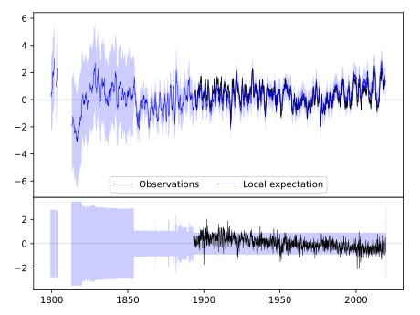
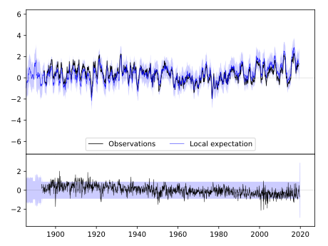
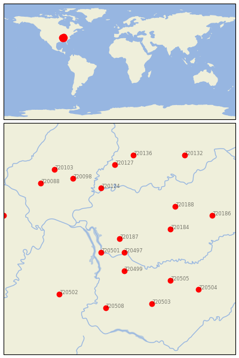

HOPKINSVILLE [USA]


| Neighbour | Name | Country | Distance | Lon/Lat | Years |
|---|
| 720187 | HOPKINSVILLE | USA | 0 | -87.5, 36.8 | 1893-2019 |
| 720497 | CLARKSVILLE WWTP | USA | 34 | -87.4, 36.5 | 1854-2019 |
| 720501 | DOVER 1 W | USA | 48 | -87.9, 36.5 | 1893-2019 |
| 720499 | DICKSON | USA | 78 | -87.4, 36.1 | 1885-2019 |
| 720184 | BOWLING GREEN RGNL A | USA | 100 | -86.4, 37.0 | 1878-2019 |
| 720124 | MT VERNON | USA | 127 | -87.9, 37.9 | 1887-2019 |
| 720188 | LEITCHFIELD 2 N | USA | 131 | -86.3, 37.5 | 1893-2019 |
| 720505 | MURFREESBORO 5 N | USA | 140 | -86.4, 35.9 | 1883-2019 |
| 720503 | LEWISBURG EXP STN | USA | 167 | -86.8, 35.4 | 1888-2019 |
| 720508 | WAYNESBORO | USA | 168 | -87.8, 35.3 | 1884-2019 |
| 720098 | MCLEANSBORO | USA | 169 | -88.5, 38.1 | 1882-2019 |
| 720502 | JACKSON EXP STN | USA | 177 | -88.8, 35.6 | 1891-2019 |
| 720127 | PRINCETON 1 W | USA | 178 | -87.6, 38.4 | 1884-2019 |
| 720186 | GREENSBURG | USA | 186 | -85.5, 37.3 | 1890-2019 |
| 720504 | MC MINNVILLE | USA | 195 | -85.8, 35.7 | 1872-2019 |
| 720088 | DU QUOIN 4 SE | USA | 200 | -89.2, 38.0 | 1886-2019 |
| 720136 | WASHINGTON 1 W | USA | 201 | -87.2, 38.6 | 1893-2019 |
| 720103 | MT VERNON 3 NE | USA | 207 | -88.9, 38.3 | 1879-2019 |
| 720297 | MARBLE HILL | USA | 228 | -90.0, 37.3 | 1891-2019 |
| 720132 | SALEM | USA | 235 | -86.1, 38.6 | 1884-2019 |